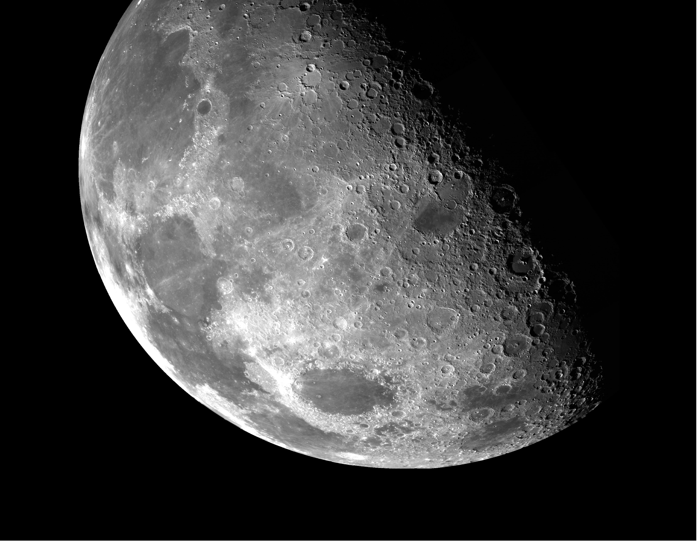
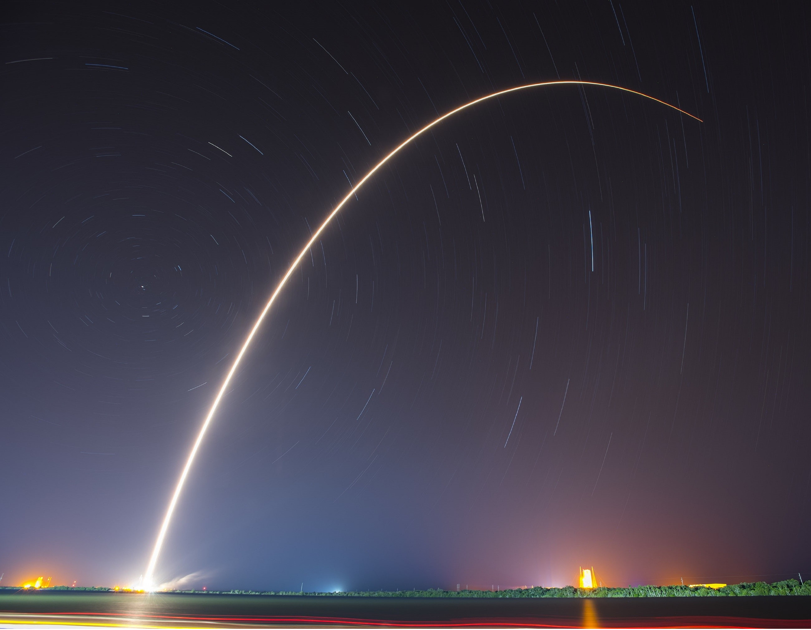

upcoming events

The Lunar Exploration
the first step of crewed lunar exploration: from Earth orbit it was injected into a lunar trajectory, completed lunar orbit, and returned safely to Earth

James Webb Space Telescope
The JWST is a space telescope which conducts infrared astronomy. As the largest optical telescope in space, it can able to take high resolution pictures

Falcon 9
Falcon 9 is a partially reusable medium lift launch vehicle that can carry cargo and crew into Earth orbit, produced by American aerospace company SpaceX.